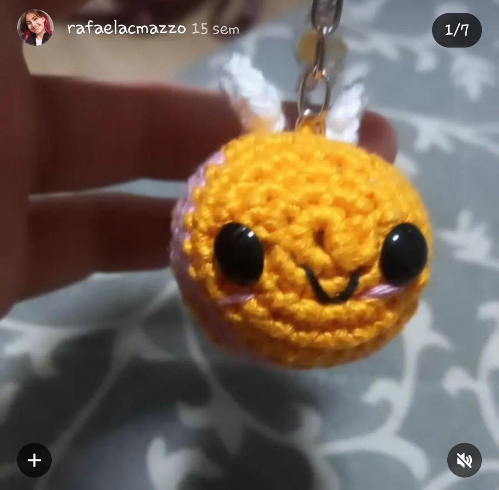
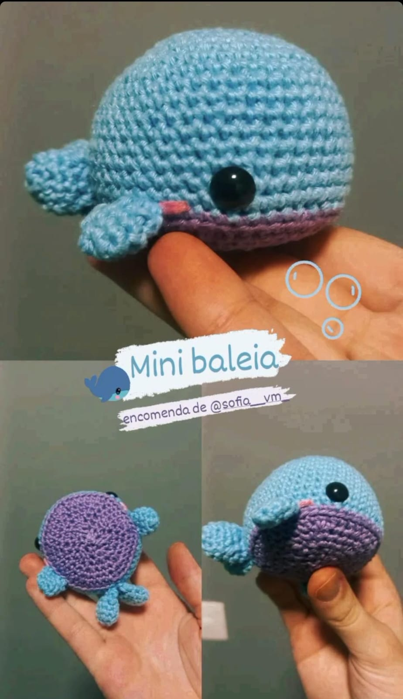
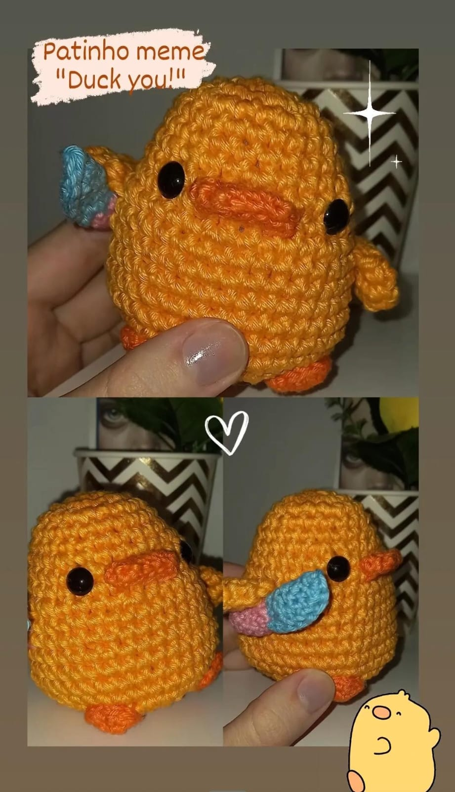
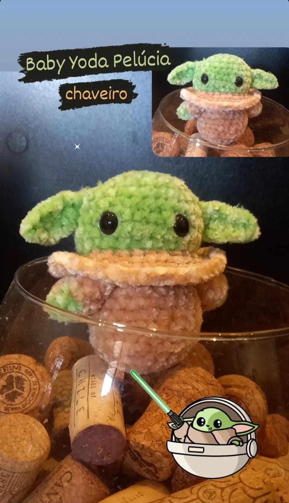
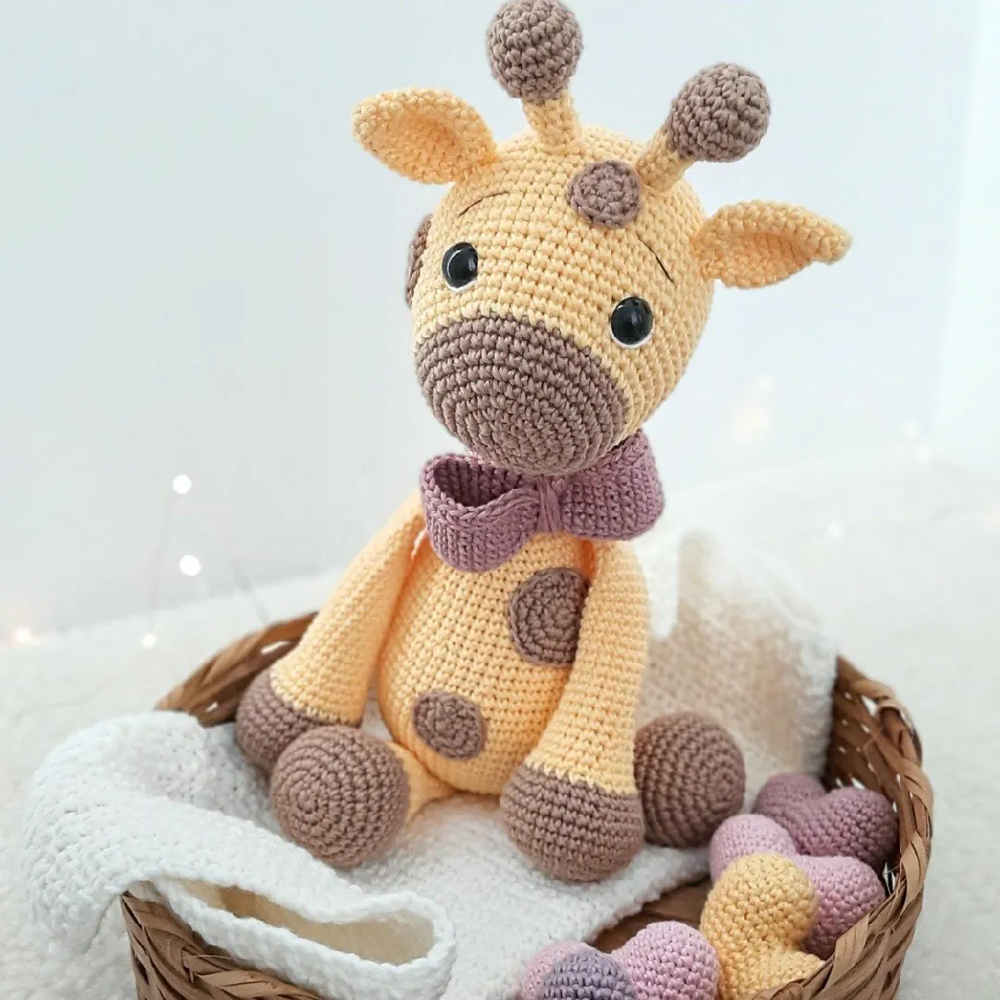

Você tem a prática de fazer crochet?

Espero que tenha aprendido mais sobre os amigurumis!
Encerramos aqui por hoje...Obrigada por ter lido e aprendido mais sobre hobbies! ;D
Voltar para a anterior
Voltar ao topo!
Por que não falar sobre o hobbie favorito das vovós?? E que também está se popularizando entre os jovens? Esse hobbie é totalmente criativo e artesanal, fazendo com que a coordenação e a criatividade sejam exercitadas.
Dos mais simples aos mais ... fofos. Primeiramente o chaveiro de borboleta:

Chaveiro de abelha:
Mini baleia:
Pato com faquinha:
Baby yoda de pelúcia:
Entre muitos outros..... Caso queira conhecer mais sobre: @rafaelacmazzo eh meu Instagram :D
Amigurumis são os personagens e bichinhos feitos de crochet e, na minha opinião, eles são os mais divertidos de serem feitos - enquanto roupas e panos retos são mais entediantes. Colocar enchimento e os olhinhos são as melhores partes...dando vida aos personagens.
"Uma das tendências no universo do artesanato são os amigurumis, peças de crochê em 3D, geralmente no formato de animais, flores e bonecos. Feitos com diferentes tipos de linha, são itens que agregam a decoração de quartos infantis e servem, ainda, como brinquedos educativos."
Casa e Jardim: Amigurumi: o que é, os materiais e como fazer as peças de crochê -> Saiba mais"O street dance trabalha habilidades de coordenação, equilíbrio e ritmo, desenvolvendo a expressão corporal e conscientização de equipe [..] ."
Encantos da dany: O que é Amigurumi? -> Saiba maisNÃO FEITO POR MIM. Mas um exemplo a baixo:

Espero que tenha aprendido mais sobre os amigurumis!
Encerramos aqui por hoje...Obrigada por ter lido e aprendido mais sobre hobbies! ;D
Voltar para a anterior
Voltar ao topo!